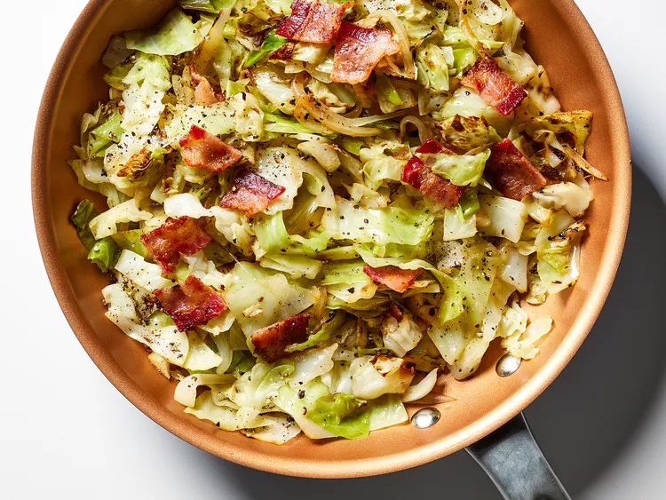

Bacon-Fried Cabbage

Description
Cabbage and bacon make a comforting winter side dish that goes well with any meat dish.
Ingredients
- 2 slices thick-cut bacon, cut into 1-inch pieces
- 1 small cabbage, cored and sliced
- 1 medium onion, sliced
- 1/2 teaspoon caraway seeds
- 1/2 teaspoon salt
- 1/4 teaspoon freshly ground black pepper
Directions
- Cook bacon in a large skillet over medium heat until fat starts to render, about 5 minutes.
- Stir in cabbage, onion, caraway seeds, salt, and pepper.
- Cook, covered, stirring occasionally, until cabbage is tender, about 15 minutes.